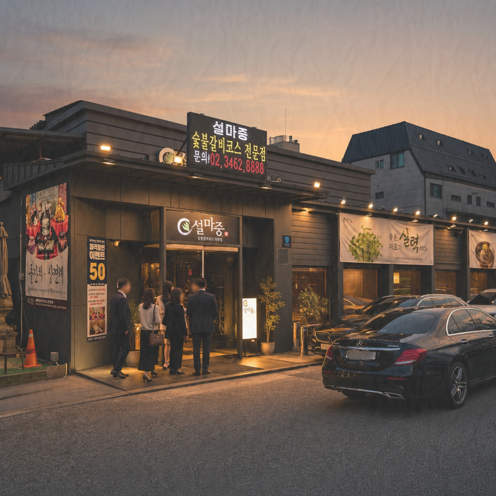
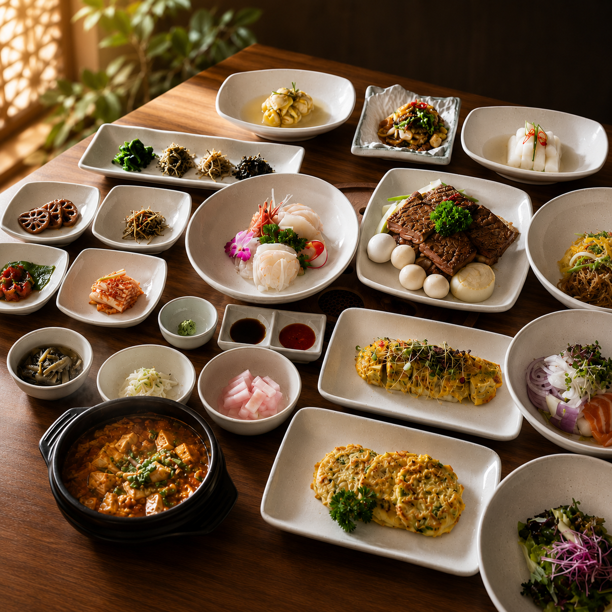
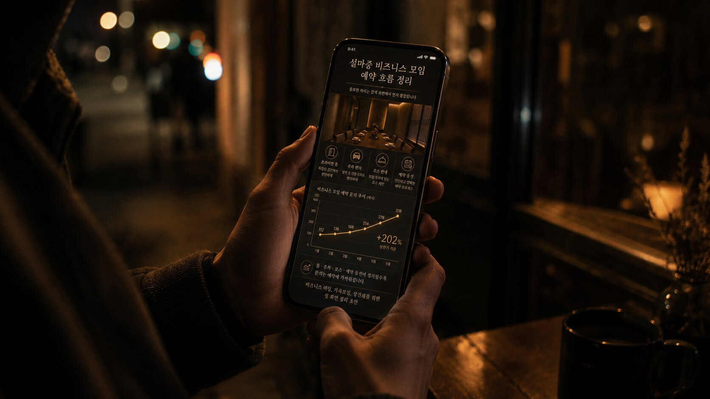
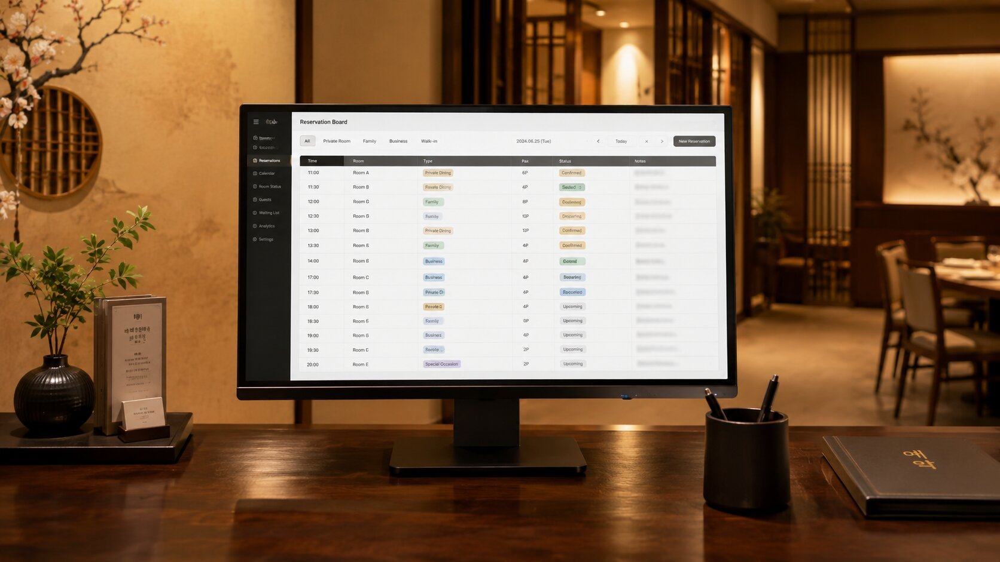
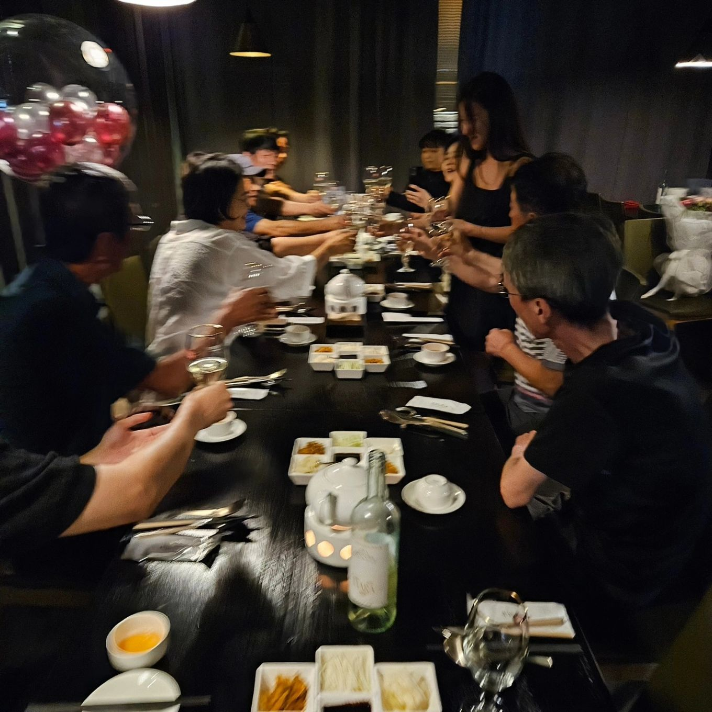
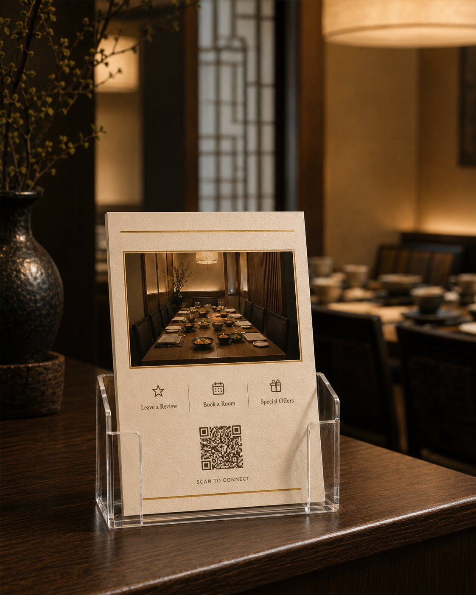

CURRENT · INCLUDED
설마중·루위 온라인 표면 운영
360만원 / 월 · VAT 포함
- 설마중 월 180만원 + 루위 월 180만원
- 네이버·구글·캐치테이블 기본 정보 점검
- 대표사진·키워드·문장 구조 정리
- 리뷰·소식·프로필 상태 관리
- 온라인에서 발견되는 문제와 다음 우선순위 제안
지키는 범위 — 고객이 매장을 처음 검색했을 때 보이는 사진, 문장, 정보, 신뢰 신호.
설마중과 루위의 첫 달은 온라인 첫인상을 정리하는 시간이었습니다. 이제는 이미 나타난 매출 신호를 바탕으로, 강남권 법인 수요와 오프라인 경험, 도시락·갈비세트 매출까지 어디까지 운영할지 선택할 차례입니다.
이 제안은 더 많은 작업을 판매하기 위한 문서가 아닙니다. 현재 계약이 지키는 범위와 새로 열고 싶은 매출 경로를 분리해, 필요한 책임의 깊이를 고르기 위한 문서입니다.


다음 과제는 더 가까운 강남권 고객이 설마중을 발견하고, 회식·행사·상품 주문까지 안심하고 선택할 표면을 만드는 것입니다.
처음부터 모든 현장·상품·매출 운영을 포함한 계약이 아니었습니다. 두 브랜드가 네이버·구글·캐치테이블과 대표사진·문장에서 흐려지지 않도록 첫 표면을 정리하고, 다음에 필요한 일을 발견하는 단계였습니다.
각 작업은 단독으로 매출을 만든다고 주장할 수 없습니다. 다만 고객의 망설임을 줄이고, 직원이 준비할 시간을 만들고, 매장의 강점이 더 정확히 보이게 하는 조건을 하나씩 정리했습니다.
고객이 첫 화면에서 음식의 격과 매장의 실제 분위기를 함께 판단하도록 사진의 역할을 분리했습니다.
매장을 단순한 지역 식당이 아니라 갈비, 베이징덕, 가족·비즈니스 자리라는 방문 이유로 읽히게 했습니다.
만족한 고객이 리뷰를 남기고 싶어도 지나치던 순간을, 자연스럽게 행동할 수 있는 자리로 바꿨습니다.
예약을 종이에 보관하는 상태에서, 직원이 다음 고객과 전체 흐름을 미리 볼 수 있는 운영 접점으로 이동했습니다.
정보 전달물이 매장의 격을 깎지 않으면서도 고객이 행동해야 할 이유와 경로가 보이도록 정리했습니다.
좌석, 외투 보관, 부모님 동선, 행사 장면, 유니폼, 음악, 입구 화면까지 고객이 실제로 느끼는 표면이 보이기 시작했습니다.
설마중의 음식·입지·기존 고객·현장 대응이 만든 기본 체력 위에 최근의 온라인·디자인·운영 정리가 더해졌습니다. 지금 필요한 일은 특정 작업의 공으로 돌리는 것이 아니라, 높은 매출이 발생한 조건을 기록해 반복 가능성을 확인하는 것입니다.
새로운 고객을 데려오기 전에, 설마중이 실제로 많은 고객과 높은 매출을 처리할 수 있다는 운영 가능성이 확인됐습니다.
사진·리뷰·키워드·예약·계절·단체 수요의 영향을 나눠 보려면 예약과 매출 데이터를 같은 날짜 축으로 맞춰야 합니다.
우면권에서 이미 발생하는 법인 수요를 확인하고, 더 가까운 강남권과 매장 밖 상품 매출로 확장할 가능성을 검증합니다.
설마중은 ‘서초구 남부순환로 2648’이라는 주소로 등록돼 있습니다. 검색 표면은 주소·카테고리·기존 콘텐츠 문맥의 영향을 받기 때문에 양재·서초 인식이 먼저 쌓이기 쉽습니다. 그러나 실제 고객은 회식 목적, 이동 시간, 주차와 룸 조건으로 장소를 선택합니다.
직선거리나 행정구역보다 회사 내부 추천, 기존 경험, 단체 좌석과 주차에 대한 신뢰가 이동을 만들고 있을 가능성이 큽니다.
강남권 총무·비서·팀장이 설마중을 발견하고 판단할 수 있는 ‘강남 회식 장소’ 문맥과 자료가 아직 충분하지 않은 것으로 가정합니다.
블로그·Threads·네이버 소식·홈페이지·리뷰·사진을 연결해 접근성, 주차, 룸, 좌석, 행사, 단체 메뉴를 실제 판단 자료로 제공합니다.
새 계약은 게시물 수를 늘리는 계약이 아니라 고객이 발견하고, 안심하고, 방문하고, 다시 주문하는 전 과정을 누가 붙들 것인지 정하는 계약입니다.
두 브랜드의 검색 첫인상이 다시 흐려지지 않게 관리합니다.
강남권 법인 고객이 회식·임원 식사·단체 모임 장소로 판단할 정보를 만듭니다.
온라인에서 생긴 기대가 입구와 좌석, 응대, 리뷰, 행사 경험에서 무너지지 않게 합니다.
방문 고객과 법인 수요가 도시락·갈비세트 주문으로 이어지게 만듭니다.
사진, 리뷰카드, 예약보드, 안내문과 공간 장면은 각각 작은 요소입니다. 그러나 고객의 의심과 직원의 당황을 줄이는 방향으로 연결되면, 문의·예약·리뷰·상품 안내가 끊기지 않는 운영 조건이 됩니다.

리뷰를 강요하는 것이 아니라, 만족한 고객이 행동할 수 있는 타이밍과 경로를 제공합니다.

예약 정보를 직원이 함께 보고 다음 팀과 행사 조건을 미리 확인할 수 있게 합니다.

음식만이 아니라 의자, 테이블 간격, 옷 보관, 룸 동선과 행사 세팅을 보여줍니다.

카운터와 입구에서 리뷰, 갈비세트, 도시락을 한꺼번에 밀지 않고 고객 상황에 맞는 다음 행동을 보여줍니다.
설마중에서 식사한 고객은 이미 음식과 응대를 경험했습니다. 이 신뢰가 회의, 가족 모임, 손님맞이, 기업 선물의 주문으로 이어지면 좌석 수에 묶이지 않는 매출 경로가 생깁니다.
상품 사진보다 먼저 주문 조건, 사용 장면, 문의·결제·배송 경로를 정리합니다.
최소 수량, 주문 마감, 배송 범위, 세금계산서와 담당자 연락 경로를 한 장으로 정리합니다.
가격보다 어떤 자리에 어울리는지 먼저 보여주고, QR에서 구성·가격·주문을 확인하게 합니다.
방문 고객, 기업 명절 선물, 거래처 감사 수요를 각각 다른 문장과 주문 흐름으로 설계합니다.
강남권·오프라인·상품 매출을 한꺼번에 확대하는 것이 아니라, 첫 달에 기준을 맞추고 둘째 달에 수요를 실험한 뒤 셋째 달에 반복할 것을 남깁니다.
현재 HTML은 방향과 선택 구조를 먼저 보여줍니다. 내일 확보할 예약·매출 자료를 넣으면 실제 변화 그래프, 법인 고객 분포, 피크 매출 조건과 상품 기회가 한눈에 보이도록 업데이트합니다.
완벽한 회계 자료가 아니라, 매출이 움직인 날과 고객 조건을 연결할 수 있는 수준이면 충분합니다.
위 막대는 레이아웃 예시이며 실제 수치가 아닙니다. 내일 데이터 입력 후 매출·방문객·객단가·법인 예약을 분리해 표시합니다.
운영 범위가 넓어진다는 것은 게시물의 수를 늘리는 일이 아닙니다. 더 자주 확인하고, 예약·매출을 더 깊이 연결하며, 발견된 기회를 디자인·콘텐츠·현장·상품 실행까지 닫는 일입니다.
설마중·루위의 검색 첫인상을 지키고, 데이터·현장·상품 실행은 내부에서 담당하는 범위입니다.
강남권과 상품 수요가 실제 문의·예약·매출로 이어지는지 데이터와 제한된 실행으로 확인합니다.
강남권 모객, 오프라인 경험, 도시락·갈비세트 판매를 실제 월간 실행으로 함께 붙듭니다.
설마중·루위에서 만든 기준을 무화잠까지 연결하고, 회사의 반복 가능한 운영 자산으로 남깁니다.
| 운영 범위 | 표면 유지 | 신호 확인 | 성장 실행 | 그룹 운영 |
|---|---|---|---|---|
| 설마중·루위 온라인 표면 | ● | ● | ● | ● |
| 예약·방문·매출 대시보드 | — | ● | ● | ● |
| 강남권 수요 콘텐츠 | — | 검증 중심 | 상시 실행 | 그룹 실행 |
| 현장·리뷰카드·공간 경험 | — | 점검·제안 | 운영 | 그룹 기준 |
| 도시락·갈비세트 판매 | — | 수요 실험 | 상시 운영 | 브랜드별 운영 |
| 촬영·영상·브로셔 실행 관리 | — | 기획 중심 | ● | ● |
| 무화잠·그룹 통합 보고 | — | — | — | ● |
금액·방문 횟수·제작 수량은 필요한 책임 범위를 먼저 정한 뒤 별도 비용안에서 맞춥니다. 장비·인쇄·광고비·전문 촬영팀·대규모 개발·시공 등 실제 물성이 들어가는 비용은 별도입니다.
현재 범위를 유지할 수도 있습니다. 다만 강남권 법인 수요와 오프라인 경험, 도시락·갈비세트를 실제 매출 경로로 열고 싶다면 그 범위를 맡을 운영 역할이 함께 확장돼야 합니다.